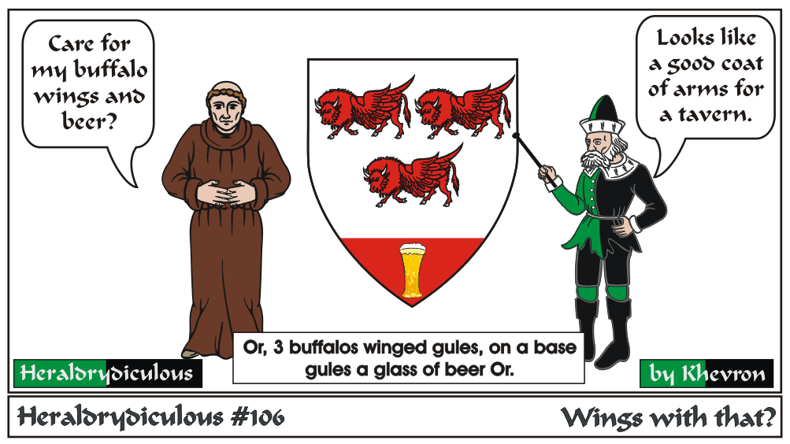

Wings can be applied to almost any critter (lions, serpents, or in this case, Buffalo) that doesn't have them already, and many inanimate charges as well
(such as acorns, crosses, swords, hammers, hearts). Sometimes even heads can be winged.
Wings can be feathered by default or specified as bat-winged.
e-mail: 
Back to Khevron's Heraldry Page